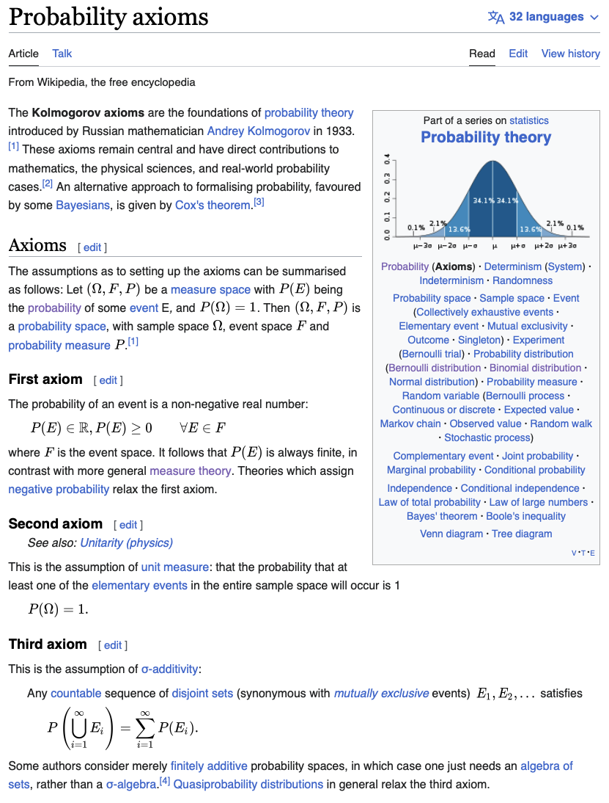

04wk: 시그마필드, 측도
B. Motivation 2
# 생각1 – trivial \(\sigma\)-field
\(\Omega=[0,1)\) 이라고 하자. \({\cal F}\)을 아래와 같이 정의한다고 하자. 이러한 묶음 \({\cal F}\)는 합리적이다.
\[{\cal F}=\{\emptyset, \Omega \}\]
(해설)
이렇게 잡으면 모순이 일어나진 않음. (그렇지만 이러한 \({\cal F}\)는 “확률”을 쓸모없는 개념으로 만든다)
#
# 생각2 – 교집합..?
\(\Omega=\{1,2,3,4\}\)라고 하자. 아래와 같은 \({\cal F}\)는 합리적일까?
\[{\cal F}= \big\{ \emptyset, \{1,2\}, \{1,3\}, \{1,4\},\{2,3\},\{2,4\},\{3,4\}, \Omega\big\}\]
(해설)
집합 \(A\)와 \(B\)에 대한 확률값을 매길 수 있다면 \(\mathbb{P}(A \cap B)\)를 정의할 수 있어야 할까? 이 문항은 이 질문에 대한 답을 준다. 주어진 \({\cal F}\)는 아래의 조건을 만족한다.
조건1. \(\Omega \in {\cal F}\)
조건2. \(A \in {\cal F} \Rightarrow A^c \in {\cal F}\)
조건3. \(\big(\forall n \in \mathbb{N}: A_n \in {\cal F} \big) \text{ and } \big(\forall {m,k} \in \mathbb{N}, m\neq k:~ A_m \cap A_k = \emptyset \big) \quad \Longrightarrow \quad \uplus_{n=1}^{\infty} A_n \in~ {\cal F}\)
그렇지만 \({\cal F}\)는
\[\{1,2\} \cap \{1,3\} = \{1\}\]
와 같은 집합이라든가,
\[\{1,2\} \cup \{1,3\} = \{1,3,4\}\]
와 같은 집합의 확률값을 잴 수 없다고 한다. 즉 \(\mathbb{P}(A)\), \(\mathbb{P}(B)\)를 잴 수 있음에도 \(\mathbb{P}(A \cap B)\), \(\mathbb{P}(A \cup B)\) 의 확률값은 모두 잴 수 없다고 하는 것이다. 이러한 접근법은 확률의 공리에 모순을 불러일으키는 건 아니지만 “확률”을 쓸모없게 만든다.
#
# 생각3 – 교집합..?
\(\Omega=\{1,2,3,4\}\)라고 하자. 아래와 같은 \({\cal F}\)는 합리적일까?
\[{\cal F}= \big\{ \emptyset, \{1,2\}, \{1,3\}, \{1,4\},\{2,3\},\{2,4\},\{3,4\}, \Omega\big\}\]
(해설)
집합 \(A\)와 \(B\)에 대한 확률값을 매길 수 있다면 \(\mathbb{P}(A \cap B)\)를 정의할 수 있어야 할까? 이 문항은 이 질문에 대한 답을 준다. 주어진 \({\cal F}\)는 아래의 조건을 만족한다.
조건1. \(\Omega \in {\cal F}\)
조건2. \(A \in {\cal F} \Rightarrow A^c \in {\cal F}\)
조건3. \(\big(\forall n \in \mathbb{N}: A_n \in {\cal F} \big) \text{ and } \big(\forall {m,k} \in \mathbb{N}, m\neq k:~ A_m \cap A_k = \emptyset \big) \quad \Longrightarrow \quad \uplus_{n=1}^{\infty} A_n \in~ {\cal F}\)
그렇지만 \({\cal F}\)는
\[\{1,2\} \cap \{1,3\} = \{1\}\]
와 같은 집합이라든가,
\[\{1,2\} \cup \{1,3\} = \{1,3,4\}\]
와 같은 집합의 확률값을 잴 수 없다고 한다. 즉 \(\mathbb{P}(A)\), \(\mathbb{P}(B)\)를 잴 수 있음에도 \(\mathbb{P}(A \cap B)\), \(\mathbb{P}(A \cup B)\) 의 확률값은 모두 잴 수 없다고 하는 것이다. 이러한 접근법은 확률의 공리에 모순을 불러일으키는 건 아니지만 “확률”을 쓸모없게 만든다.
#
# 조건의정리 (교집합을 추가하면)
확률을 좀 더 쓸모있게 만들기 위해 두 집합 \(A\), \(B\)에 대한 확률을 무모순으로 정의가능하다면 그것의 교집합인 \(A\cap B\)에 대하여서도 확률값을 무모순으로 정의가능하다고 가정하자. 즉 \(\Omega\)의 부분집합중 잴 수 있는 집합의 모임 \({\cal F}\) 는 아래의 조건1~ 조건4을 만족하는 집합의 집합 (collection) 이라고 정의하자.
조건1. \(\Omega \in {\cal F}\)
조건2. \(A \in {\cal F} \Rightarrow A^c \in {\cal F}\)
조건3. \(\big(\forall n \in \mathbb{N}: A_n \in {\cal F} \big) \text{ and } \big(\forall {m,k} \in \mathbb{N}, m\neq k:~ A_m \cap A_k = \emptyset \big) \quad \Longrightarrow \quad \uplus_{n=1}^{\infty} A_n \in~ {\cal F}\)
조건4. \(A \in {\cal F}, B \in {\cal F} \Rightarrow A \cap B \in {\cal F}\)
그런데 조건3과 조건4를 이용하면 아래와 같은 조건5를 유추할 수 있다.
조건1. \(\Omega \in {\cal F}\)
조건2. \(A \in {\cal F} \Rightarrow A^c \in {\cal F}\)
조건3. \(\big(\forall n \in \mathbb{N}: A_n \in {\cal F} \big) \text{ and } \big(\forall {m,k} \in \mathbb{N}, m\neq k:~ A_m \cap A_k = \emptyset \big) \quad \Longrightarrow \quad \uplus_{n=1}^{\infty} A_n \in~ {\cal F}\)
조건4. \(A \in {\cal F}, B \in {\cal F} \Rightarrow A \cap B \in {\cal F}\)
조건5. \(\big(\forall n \in \mathbb{N}: A_n \in {\cal F} \big) \quad \Longrightarrow \quad \cup_{n=1}^{\infty} A_n \in~ {\cal F}\)
그런데 조건5는 조건3을 imply 하므로 조건3을 삭제할 수 있다.
조건1. \(\Omega \in {\cal F}\)
조건2. \(A \in {\cal F} \Rightarrow A^c \in {\cal F}\)
조건4. \(A \in {\cal F}, B \in {\cal F} \Rightarrow A \cap B \in {\cal F}\)
조건5. \(\big(\forall n \in \mathbb{N}: A_n \in {\cal F} \big) \quad \Longrightarrow \quad \cup_{n=1}^{\infty} A_n \in~ {\cal F}\)
그런데 조건5와 조건2가 조건4를 imply 하므로 조건4 역시 삭제할 수 있다. 따라서 정리하면 아래와 같다.
조건1. \(\Omega \in {\cal F}\)
조건2. \(A \in {\cal F} \Rightarrow A^c \in {\cal F}\)
조건3. \(\big(\forall n \in \mathbb{N}: A_n \in {\cal F}\big) \Rightarrow \cup_{n=1}^{\infty} A_n \in~ {\cal F}\)
#
C. 정의
# 정의: 시그마필드
\(\Omega\)의 부분집합중 아래의 조건1~ 조건3을 만족하는 집합의 집합 (collection) \({\cal F}\)를 “\(\Omega\)에 대한 시그마필드”라고 한다.
조건1. \(\Omega \in {\cal F}\)
조건2. \(A \in {\cal F} \Rightarrow A^c \in {\cal F}\)
조건3. \(\big(\forall n \in \mathbb{N}: A_n \in {\cal F}\big) \Rightarrow \cup_{n=1}^{\infty} A_n \in~ {\cal F}\)
그리고 \({\cal F}\)의 원소를 \({\cal F}\)-measurable set 이라고 한다.
#
- 좀 더 편리하게 아래와 같이 기억하면 좋다.
시그마필드는 잴 수 있는 집합의 모임인데 아래와 같은 규칙을 만족해야 한다. (1) 전체집합을 포함한다. (2) 여집합에 닫혀있다. (3) 가산합집합에 닫혀있다.
- 참고1: 시그마필드라는 것은 유일하게 정의되지 않는다. 즉 동일한 \(\Omega\)에 대하여 정의할 수 있는 시그마필드 \({\cal F}\)는 유일하지 않다.
- 참고2: 시그마필드는 \(\Omega\) 없이 단독으로 정의되지 않는다. 즉
\[{\cal F}=\{\emptyset, \{H\}, \{T\}, \{H,T\}\}\]
는 단지 그냥 시그마필드라고 언급하기 보다 \(\Omega=\{H,T\}\)에 대한 시그마필드라고 해야 정확한 표현이다.
- 참고3: 참고2에 따라서 \({\cal F}\) 단독으로 표기하는 것 보다 \(\Omega\)를 붙여서 \((\Omega,{\cal F})\)와 같이 쌍으로 표기하는게 더 합리적이다. 앞으로는 이러한 쌍을 measurable space 라고 부른다.
- 참고4: 시그마필드는 엄밀하게 말하면 “확률값”을 무모순으로 정의가능한 집합들의 모임이 아니다. 정확하게는 “길이 비슷한 무언가”를 무모순으로 정의가능한 집합들의 모임이다. 시그마필드의 정의를 잘 생각해보면, “확률값” 대신에 “길이” 혹은 “길이 비슷한 무언가” 를 대입하여도 말이 성립한다.
- 참고5: “길이 비슷한 무언가” 에는 “길이”도 포함되고 “확률”도 포함된다. 따라서 시그마필드를 올바르게 이해하는 것은 아래의 그림이다.

즉 시그마필드는 “확률값”을 무모순으로 정의하기 위해 필요한 최소기준들을 만족하는 모임일 뿐이지, 그 조건들을 만족한다고 반드시 “확률값”을 무모순으로 정의할 수 있는건 아니다. (신랑감후보같은 개념)
지금까지의 스토리
- 지금까지의 이야기.
- \(\Omega\)의 모든 부분집합에 대해서 확률을 “무모순”으로 정의하는게 엄청 쉬운일 인줄 알았는데,1
- 사실은 그렇지가 않았다.2 확률을 정의하는건 매우 까다로운 일이었다.
- 이러한 까다로움을 해결하기 위해서 “르벡메져”라는 새로운 도구를 사용했다. 이 도구는 몇 가지 까다로운 집합에 대하여 확률을 무모순으로 정의할 수 있었다.
- 르벡메져는 구간 \([0,2\pi)\)의 모든 유리수 집합의 길이와 구간 \([0,2\pi)\)의 모든 무리수 집합의 길이를 다르게 정의하는 신기한 방식을 사용하는데, 이러한 방식을 납득하기 위한 최소한의 노력으로 “셀 수 있는 무한”과 “셀 수 없는 무한”의 개념을 공부했다.
- 하지만 르벡메져를 통해서도 \(\Omega\)의 모든 부분집합에 대하여 길이를 잴 수 없는 집합3이 존재함이 밝혀졌다.
- 따라서 \(\Omega\)의 모든 부분집합에 대해서 확률을 “무모순”으로 정의하는 일은 포기하였다.
- 대신에 \(\Omega\)의 부분집합 중, 잴 수 있는 집합들에 대해서만 확률을 “무모순”으로 정의하는 일을 시도했다.
- 이 잴 수 있는 집합들의 모임을 시그마필드라 칭하고 기호로는 \({\cal F}\)라고 정의하였다.
1 동전예제
2 바늘이 하나 있는 시계예제
3 비탈리집합
- 이제 하고 싶은 것
시그마필드에서 확률을 정의하자! \(\Leftrightarrow\) 시그마필드를 정의역으로 하는 “확률”이라는 이름의 함수를 정의하자.
확률측도 motivation
(예제1) – 시그마필드에서만 확률정의가능
\(\Omega=\{H,T\}\) 라고 하고 \({\cal F}=\{\emptyset, \{H\},\Omega\}\) 이라고 하자. 아래와 같은 함수 \(P\)를 고려하고 이것을 확률이라고 하자. 이러한 확률은 합리적인가?
- \(P(\emptyset) = 0\)
- \(P(\{H\}) = \frac{1}{2}\)
- \(P(\Omega) = 1\)
(해설1) \({\cal F}\)는 시그마필드가 아니므로 이 위에서는 애초에 확률을 정의할 수 없음.
(해설2) 확률을 잘 정의하기 위해서는 우선 잘 정의된 “잴 수 있는 공간 \((\Omega, {\cal F})\)” 가 필요하다.
(예제2) – 잘 정의된 확률
\(\Omega=\{H,T\}\) 라고 하고 \({\cal F}=2^{\Omega}\) 이다. 아래와 같은 함수 \(P\)를 고려하고 이를 잴 수 있는 공간 \((\Omega,{\cal F})\) 에서의 확률이라고 하자. 이러한 확률은 합리적인가?
- \(P(\emptyset) = 0\)
- \(P(\{H\}) = \frac{1}{100}\)
- \(P(\{T\}) = \frac{99}{100}\)
- \(P(\Omega) = 1\)
(해설) 합리적임.
(예제3) – 확률은 0보다 커야해.
\(\Omega=\{H,T\}\) 라고 하고 \({\cal F}=2^{\Omega}\) 이다. 아래와 같은 함수 \(P\)를 고려하고 이를 잴 수 있는 공간 \((\Omega,{\cal F})\) 에서의 확률이라고 하자. 이러한 확률은 합리적인가?
- \(P(\emptyset) = 0\)
- \(P(\{H\}) = -\frac{1}{2}\)
- \(P(\{T\}) = \frac{1}{2}\)
- \(P(\Omega) = 1\)
(해설) 확률은 음수가 나오면 안되므로 합리적이지 않음.
(예제4) – 전체확률은 1이어야 함.
\(\Omega=\{H,T\}\) 라고 하고 \({\cal F}=\{\emptyset, \Omega\}\) 이다. 아래와 같은 함수 \(P:{\cal F} \to [0,1]\)를 고려하고 이를 잴 수 있는 공간 \((\Omega,{\cal F})\) 에서의 확률이라고 하자. 이러한 확률은 합리적인가?
- \(P(\emptyset) = 0\)
- \(P(\Omega) = 0.5\)
(해설) 전체확률은 1이어야 하므로 합리적이지 않음.
(예제5) – 공집합의 확률은 0이어야 함.
\(\Omega=\{H,T\}\) 라고 하고 \({\cal F}=\{\emptyset, \Omega\}\) 이다. 아래와 같은 함수 \(P:{\cal F} \to [0,1]\)를 고려하고 이를 잴 수 있는 공간 \((\Omega,{\cal F})\) 에서의 확률이라고 하자. 이러한 확률은 합리적인가?
- \(P(\emptyset) = 0.5\)
- \(P(\Omega) = 1\)
(해설) 공집합의 확률은 0이어야 하므로 합리적이지 않음.
(예제6) – 서로소인 집합을 합친 확률, 여집합의 확률
\(\Omega=\{H,T\}\) 라고 하고 \({\cal F}=\{\emptyset, \{H\}, \{T\}, \Omega\}\) 이다. 아래와 같은 함수 \(P:{\cal F} \to [0,1]\)를 고려하고 이를 잴 수 있는 공간 \((\Omega,{\cal F})\) 에서의 확률이라고 하자. 이러한 확률은 합리적인가?
- \(P(\emptyset) = 0\)
- \(P(\{H\}) = 1/3\)
- \(P(\{T\}) = 1/3\)
- \(P(\Omega) = 1\)
(해설1) 합리적이지 않음. 왜냐하면
- \(P(\{H\}\cup \{T\})=P(\Omega)=1\)
- \(P(\{H\}\cup \{T\})=P(\{H\})+P(\{T\})=2/3\)
이므로 모순임.
(해설2) 합리적이지 않음. 왜냐하면
- \(P(\Omega-\{H\})=P(\{T\})=1/3\)
- \(P(\Omega-\{H\})=1-P(\{H\})=2/3\)
이므로 모순임.
(예제7) – 포함관계에 있는 집합의 확률
\(\Omega=\{1,2,3\}\) 라고 하고
\[{\cal F}=\{\emptyset, \{1\}, \{2\}, \{3\}, \{1,2\}, \{1,3\}, \{2,3\}, \Omega\}\]
라고 하자. 아래와 같은 함수 \(P:{\cal F} \to [0,1]\)를 고려하고 이를 잴 수 있는 공간 \((\Omega,{\cal F})\) 에서의 확률이라고 하자. 이러한 확률은 합리적인가?
- \(P(\emptyset) = 0\)
- \(P(\{1\}) = 1/4\)
- \(P(\{2\}) = 1/4\)
- \(P(\{3\}) = 2/4\)
- \(P(\{1,2\}) = 2/4\)
- \(P(\{1,3\}) = 3/4\)
- \(P(\{2,3\}) = 1/4\)
- \(P(\Omega) = 1\)
(해설1) 합리적이지 않음. 왜냐하면
- \(P(\{2\}\cup \{3\})=P(\{2,3\})=1/4\)
- \(P(\{2\}\cup \{3\})=P(\{2\})+P(\{3\})=3/4\)
이므로 모순임.
(해설2) 합리적이지 않음. 왜냐하면
- \(\{3\} \subset \{2,3\}\)
- \(P(\{3\}) \geq P(\{2,3\})\)
이므로 \(A \subset B \Rightarrow P(A) \leq P(B)\) 가 성립하지 않음.
(기타등등 해설)
\(P(\{2,3\}^c)\), \(P(\{1\}\cup \{2,3\})\) 따위를 계산해도 모순임
생각의 시간
- 확률이라는 것을 구체적으로 정의하지는 않았지만 적어도 현재까지 파악한 직관에 의하면 아래와 같은 조건을 만족하는 함수라고 “일단은” 생각할 수 있다.
- 확률 \(P\)는 시그마필드에서 정의되어야 한다. 따라서 확률이라는 말을 하기 전에 우선 “\(\Omega\)에 대한 \({\cal F}\)”를 정의하거나 “잴 수 있는 공간 \((\Omega, {\cal F})\)”을 정의해야 한다.
- 확률 \(P\)는 0보다 크고 1보다 작아야 한다.
- 전체확률은 항상 1이어야 한다. 즉 \(P(\Omega)=1\) 이어야 한다. // (이게 5번과 결합하면 공집합일 확률이 0이어야 한다는 것을 암시한다)
- 서로소인 두 집합 \(A,B\)에 대하여 확률 \(P(A\cup B)\)는 \(P(A)+P(B)\)와 같이 계산 되어야 한다.
- \(P(A^c)=1-P(A)\) 가 성립해야 한다.
- 포함관계에 있는 두 집합 \(A\subset B\)에 대하여 \(P(A)\leq P(B)\)가 항상 성립해야 한다.
- 또한 아래와 같은 성질도 있어야 할 것 같다. (혹은 있었으면 좋겠다)
- 서로소인 집합열 \(B_1,B_2,\dots\) 에 대하여 \(P(\cup_{i=1}^{\infty} B_i) = \sum_{i=1}^{\infty}P(B_i)\) 가 성립하면 좋겠다. (4번의 업그레이드 버전)
- \(P(A\cup B)= P(A) + P(B) - P(A\cap B)\) 등을 포함한 기타 잡스러운 성질들도 모두 성립하면 좋겠다.
- 이제 우리가 따져봐야 할 것은 (1) 확률을 정의하기 위한 조건으로 1-8이면 충분한지 (혹시 더 많은 조건들이 필요한건 아닌지) (2) 위에서 리스팅한 조건들이 꼭 모두 다 필요한지? (예를 들면 한 두개의 조건이 다른조건을 암시하는건 아닌지) 이다.
- 결론적으로는 말하면 1,2,3,7만 있으면 충분하다.
- 연습1: \((3),(4) \Rightarrow (5)\) 임을 보여라.
- 연습2: \((2),(4) \Rightarrow (6)\) 임을 보여라.
확률측도의 정의
- 확률의 정의: 메져(measure)는 길이따위를 일반화한 개념이다. 확률은 메져의 특수한 형태이다.4메져와 확률은 아래와 같이 정의한다.
4 메져의 조건에서 전체집합의 길이가 1이라는 제약만 있음

- 교재의 정의 약간 설명
- 교재에서는 일반적인 측도 \(\mu\)를 설명하고 전체집합의 길이가 1인 측도를 확률측도 \(P\)라고 한다고 설명하고 있다. 따라서 교재의 \(\mu\)는 문맥상 \(P\)로 바꾸어 이해해도 무방함.
- 교재에서 \(\mu\)는 잴 수 있는 공간 \((\Omega,{\cal F}\)에서 정의한다고 서술하고 있으며 이는 우리가 이미 살펴본 조건
1과 일치한다. - 교재에서 \(\mu:{\cal F} \to \mathbb{R}\)이라고 서술되어 있는데 우리의 경우는 \(P:{\cal F} \to [0,1]\)로 바꾸어 이해하면 된다.
- 사실 잘 따져보면 이것은 우리가 위키에서 찾아본 확률의 공리도 결국 같은 소리를 하고 있다.

- 확률의 정의: 확률은 잴 수 있는 공간 \((\Omega, {\cal F})\)가 전제되었을 경우 정의 할 수 있는 일종의 함수 \(P:{\cal F} \to [0,1]\) 인데, 아래의 조건을 만족해야 한다. // 위키버전
- 확률은 항상 양수이어야 하며,
- 전체 확률은 1이어야 하며, (그리고 이것은 공집합일 확률이 0임을 암시함)
- \(\sigma\)-additivity가 성립해야 한다.
- 메져의 정의: 메져는 잴 수 있는 공간 \((\Omega, {\cal F})\)가 전제되었을 경우 정의 할 수 있는 일종의 함수 \(m: {\cal F} \to [0,\infty]\)인데, 아래의 조건을 만족해야 한다.
- 메저는 항상 양수이어야 하며,
- 공집합은 메져가 0이어야 하며,
- \(\sigma\)-additivity가 성립해야 한다.
귀찮아서 만든 이론들 (\(\star\))
상황1: 시그마필드 구하기 귀찮아
(예제1)
- \(\Omega=\{1,2,3,4\}\)이라고 하자. 내가 관심있는 event의 모음은 아래와 같다.
\[{\cal A} = \{\{1\},\{2\}\}\]
- 당연히 이러한 이벤트에 대해서만 적절한 확률을 정의하면 좋겠는데, 이는 불가능 하다. 왜냐하면 \({\cal A}\)는 시그마필드가 아니기 때문이다.
- 따라서 할 수 없이 아래와 같은 방식으로 시그마필드를 구해야 했다.
\[{\cal F} = \big\{\emptyset, \{1\}, \{2\}, \{1,2\}, \{3,4\}, \{1,3,4\}, \{2,3,4\}, \Omega \big\}\]
- 이러한 \({\cal F}\)를 구하기는 것은 귀찮은 일인데, 이를 편리하게 해결하기 위해서 \(\sigma({\cal A})\)라는 기호를 도입하고 이를 “\(\{1\}\), \(\{2\}\)를 원소로 가지는 최소한의 \({\cal F}\)” 라고 생각 하기로 하였다. 즉 앞으로는
\[\sigma({\cal A})\]
라고만 써도 위에서 명시한 \({\cal F}\)를 의미한다고 알아서 생각하면 된다는 것이다.
걱정: 문제는 이러한 논리전개가 항상 가능하냐는 것이다.
귀찮아서 만든 이론1: 걱정할 필요 없다. 언제나 \(\sigma({\cal A})\)라는 표현은 가능하다. 즉 \(\Omega\)의 임의의 부분집합에 대하여 우리가 관심있는 집합만 모은 것을 \({\cal A}\)라고 할때, \({\cal A}\)의 모든 원소를 포함하고 시그마필드의 정의를 만족하는 최소한의 시그마필드 \(\sigma({\cal A})\)는 항상 존재한다.
(예제2)
\(\Omega = \mathbb{R}\) 이라고 하자. 이중에서 우리가 관심있는 집합들은 르벡메져로 길이를 명확하게 잴 수 있는 아래와 같은 형태이다.
\[[a,b]\]
여기에서 \(a,b \in \mathbb{R}\), \(a<b\) 이라고 하자. 따라서 이 경우 \({\cal A}\)를 아래와 같이 설정할 수 있다.
\[{\cal A} = \big\{[a,b]: a,b \in \mathbb{R}, a<b \big\}\]
이제 \(\sigma({\cal A})\)를 상상하자. 이는 \(\Omega=\mathbb{R}\)에서 잴 수 있는 집합들의 모임이다. 편의상 \(\sigma({\cal A}):={\cal R}\)로 정의하자. 여기에서 \({\cal R}\) 상당히 많은 케이스를 포함하는 집합이다. 예를들면 아래와 같은 집합들은 모두 \({\cal R}\)의 원소이다. (즉 아래의 집합은 \([a,b]\)를 잴 수 있다고 할때, 당연히 잴 수 있다고 여겨지는 집합들이다.)
- \([0,2)\)
- \(\{2\}\)
- \((0,2)\)
- \([0,\infty)\), \((0,\infty)\)
- \((-\infty,0)\), \((-\infty,0]\)
- \([1,2] \cup [3,4]\)
- \((1,2] \cup [3,4)\)
- \(\mathbb{N}\), \(\mathbb{Z}\), \(\mathbb{Q}\)
- \([0,2] \cap \mathbb{Q}\)
사실상 \({\cal R}=\sigma({\cal A})\)와 같은 기호가 없다면 \(\mathbb{R}\)에서 잴 수 있는 집합들의 모임은 명시적으로 쓰는 것 자체가 불가능함.
상황2: 확률 정의하기 귀찮아
(예제1) – motivating EX
- \(\Omega=\{1,2,3,4\}\)이라고 하자. 내가 관심있는 집합의 모음은 아래와 같다.
\[{\cal A} = \{\emptyset, \{1\},\{2\},\{3,4\},\Omega\}\]
- 여기에서 \({\cal A}\)는 시그마필드가 아니다. 따라서 \({\cal A}\)에서는 확률을 정의할 수 없다. 확률을 정의하려면 \(\sigma({\cal A})\)에서 정의해야 한다.
- 소망: 그래도 그냥 \({\cal A}\)에서만 확률 비슷한걸5 잘 정의하면 안될까?
5 정의역이 시그마필드가 아니므로 확률이라고 말할 수 없다
- 희망: 이게 될 것 같다. 예를들면 함수 \(\tilde{P}:{\cal A} \to [0,1]\)를 아래와 같이 정의하자.
- \(\tilde{P}(\emptyset) = 0\)
- \(\tilde{P}(\{1\}) = 1/4\)
- \(\tilde{P}(\{2\}) = 1/2\)
- \(\tilde{P}(\{3,4\}) = 1/4\)
- \(\tilde{P}(\Omega) = 1\)
이 정도만 정의해보자. \(\tilde{P}\)는 정의역이 시그마필드가 아니라는 점만 제외하면 확률의 공리 1,2,3을 따른다. 이렇게 함수 \(\tilde{P}\)를 정의하게 되면
\[\sigma({\cal A}) = \big\{\emptyset, \{1\}, \{2\}, \{1,2\}, \{3,4\}, \{1,3,4\}, \{2,3,4\}, \Omega \big\}\]
에서의 확률 \(P:\sigma({\cal A}) \to [0,1]\)는 확률 비슷한 함수 \(\tilde{P}\)를 “알아서, 잘, 센스있게” 확장하여 정의할 수 있다. 구체적으로는 아래와 같이 된다.
| \(P\) | \(\tilde{P}\) | |
|---|---|---|
| \(\emptyset\) | \(0\) | \(0\) |
| \(\{1\}\) | \(\frac{1}{4}\) | \(\frac{1}{4}\) |
| \(\{2\}\) | \(\frac{1}{2}\) | \(\frac{1}{2}\) |
| \(\{3,4\}\) | \(\frac{1}{4}\) | \(\frac{1}{4}\) |
| \(\Omega\) | \(1\) | \(1\) |
| \(-\) | \(-\) | \(-\) |
| \(\{1,2\}\) | \(\frac{3}{4}\) | None |
| \(\{1,3,4\}\) | \(\frac{1}{2}\) | None |
| \(\{2,3,4\}\) | \(\frac{3}{4}\) | None |
(예제2) – motivating EX (2)
- \(\Omega=\{1,2,3,4\}\)이라고 하고 \({\cal A} = \{\emptyset, \{1\},\{2\}, \{3,4\}, \Omega\}\) 라고 하자. 그리고 아래와 같은 \(\sigma({\cal A})\)를 다시 상상하자.
\[\sigma({\cal A}) = \big\{\emptyset, \{1\}, \{2\}, \{1,2\}, \{3,4\}, \{1,3,4\}, \{2,3,4\}, \Omega \big\}\]
- 위의 시그마필드에서 확률을 예제1과 다른 방식으로 정의할 수 도 있다. 예를들면 아래와 같은 방식으로 정의가능하다.
| \(P_1\) | \(\tilde{P}_1\) | |
|---|---|---|
| \(\emptyset\) | \(0\) | \(0\) |
| \(\{1\}\) | \(\frac{1}{3}\) | \(\frac{1}{3}\) |
| \(\{2\}\) | \(\frac{1}{3}\) | \(\frac{1}{3}\) |
| \(\{3,4\}\) | \(\frac{1}{3}\) | \(\frac{1}{3}\) |
| \(\Omega\) | \(1\) | \(1\) |
| \(-\) | \(-\) | \(-\) |
| \(\{1,2\}\) | \(\frac{2}{3}\) | None |
| \(\{1,3,4\}\) | \(\frac{2}{3}\) | None |
| \(\{2,3,4\}\) | \(\frac{2}{3}\) | None |
또한 아래와 같은 방식도 가능하다.
| \(P_2\) | \(\tilde{P}_2\) | |
|---|---|---|
| \(\emptyset\) | \(0\) | \(0\) |
| \(\{1\}\) | \(0\) | \(0\) |
| \(\{2\}\) | \(0\) | \(0\) |
| \(\{3,4\}\) | \(1\) | \(1\) |
| \(\Omega\) | \(1\) | \(1\) |
| \(-\) | \(-\) | \(-\) |
| \(\{1,2\}\) | \(0\) | None |
| \(\{1,3,4\}\) | \(1\) | None |
| \(\{2,3,4\}\) | \(1\) | None |
- 어떠한 방식으로 정의하든 \({\cal A}\)에서 확률 비슷한 것 \(\tilde{P}_1,\tilde{P}_2\)를 잘 정의하기만 \(\sigma({\cal A})\)에서의 확률 \(P\)로 적절하게 확장할 수 있다. 심지어 이런 확장은 유일한 듯 하다.
귀찮아서 만든 이론2: 운이 좋다면, \({\cal A}\) 에서 확률의 공리를 만족하는 적당한 함수 \(\tilde{P}:{\cal A} \to [0,1]\)를 \((\Omega, \sigma({\cal A}))\) 에서의 확률측도 \(P\)로 업그레이드 할 수 있으며 업그레이드 결과는 유일하다.
(예제3) – 운이 안 좋은 경우
- \(\Omega=\{1,2,3\}\) 이라고 하고 \({\cal A} = \{\emptyset, \{1,2\},\{2,3\}, \Omega\}\) 라고 하자.
- 아래와 같은 확률 비슷한 함수 \(\tilde{P}:{\cal A} \to [0,1]\)를 정의하자.
- \(\tilde{P}(\emptyset) = 0\)
- \(\tilde{P}(\{1,2\}) = 0\)
- \(\tilde{P}(\{2,3\}) = 0\)
- \(\tilde{P}(\Omega) = 1\)
- \(\tilde{P}\)는 분명히 \({\cal A}\)에서 확률의 공리1-3을 만족한다.
- 하지만 \(\sigma({\cal A})\)로의 확장은 불가능하다.
(예제4) – 운이 안 좋은 경우
- \(\Omega=\{1,2,3,4\}\) 이라고 하고 \({\cal A} = \{\emptyset, \{1,2\},\{2,3\}, \Omega\}\) 라고 하자.
- 아래와 같은 확률 비슷한 함수 \(\tilde{P}:{\cal A} \to [0,1]\)를 정의하자.
- \(\tilde{P}(\emptyset) = 0\)
- \(\tilde{P}(\{1,2\}) = 1/2\)
- \(\tilde{P}(\{2,3\}) = 1/2\)
- \(\tilde{P}(\Omega) = 1\)
- \(\tilde{P}\)는 분명히 \({\cal A}\)에서 확률의 공리1-3을 만족한다.
- \(\sigma({\cal A})\)로의 확장도 가능하다. 하지만 유일한 확장을 보장하지 않는다.
| \(P_1\) | \(P_2\) | \(\tilde{P}\) | |
|---|---|---|---|
| \(\emptyset\) | \(0\) | \(0\) | \(0\) |
| \(\{1,2\}\) | \(\frac{1}{2}\) | \(\frac{1}{2}\) | \(\frac{1}{2}\) |
| \(\{2,3\}\) | \(\frac{1}{2}\) | \(\frac{1}{2}\) | \(\frac{1}{2}\) |
| \(\Omega\) | \(1\) | \(1\) | \(1\) |
| \(-\) | \(-\) | \(-\) | \(-\) |
| \(\{1\}\) | \(0\) | \(\frac{1}{2}\) | None |
| \(\{2\}\) | \(\frac{1}{2}\) | \(0\) | None |
| \(\{3\}\) | \(0\) | \(\frac{1}{2}\) | None |
| \(\{4\}\) | \(\frac{1}{2}\) | \(0\) | None |
| \(\{1,3\}\) | \(0\) | \(1\) | None |
| \(\{1,4\}\) | \(\frac{1}{2}\) | \(\frac{1}{2}\) | None |
| \(\{2,4\}\) | \(1\) | \(0\) | None |
| \(\{3,4\}\) | \(\frac{1}{2}\) | \(\frac{1}{2}\) | None |
| \(\{2,3,4\}\) | \(1\) | \(\frac{1}{2}\) | None |
| \(\{1,3,4\}\) | \(\frac{1}{2}\) | \(1\) | None |
| \(\{1,2,4\}\) | \(1\) | \(\frac{1}{2}\) | None |
| \(\{1,2,3\}\) | \(\frac{1}{2}\) | \(1\) | None |
(예제5) – 혹시…
- \(\Omega=\mathbb{R}\), \({\cal A}=\big\{[a,b]: a,b \in \mathbb{R}, a<b \big\}\) 라고 하자.
- \({\cal A}\)에서만 측도비슷한 함수 \(\tilde{m}([a,b])=b-a\)를 잘 정의한다면 그것이 \(\sigma({\cal A})\)에서의 측도 \(m\)으로 업그레이드 가능하며, 그 업그레이드 결과는 유일할까?